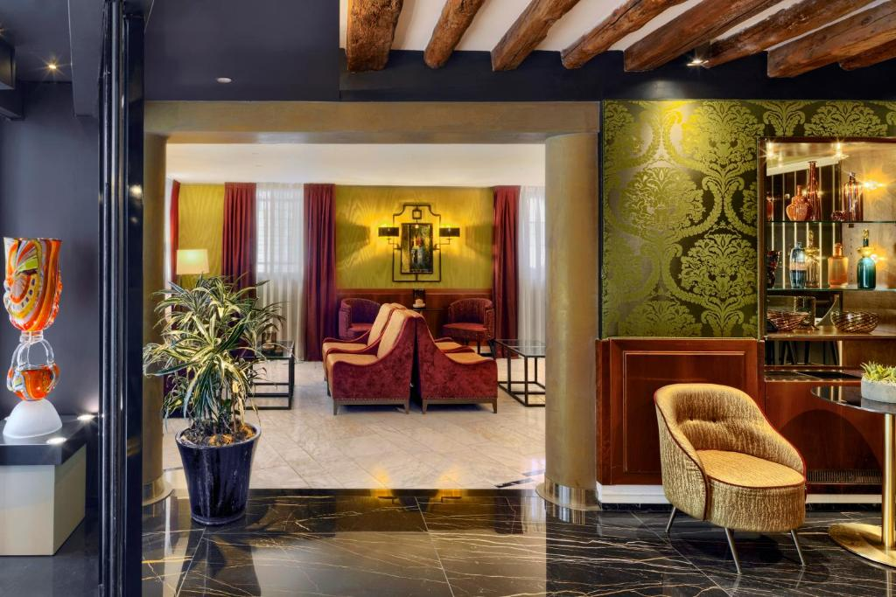

H Hotel Frankfurt Eschborn
(Alemanha - Frankfurt) - 1,2km do centro
* Café da manhã incluído
* Cancelamento grátis
Quarto Duplo
2 camas(1 casal + 1 solteiro)
2 diárias, 2 adultos R$750,00
*Impostos e taxas incluídas
1975 Avaliações 8,1
Situado em Eschborn, o H Hotel Frankfurt Eschborn oferece academia, restaurante, bar e Wi-Fi gratuito em todos os ambientes. A propriedade fica a cerca de 8,6 km do Centro de Convenções de Messe Frankfurt, a 8,8 km do Museu de História Natural Senckenberg e a 9,2 km da Estação Central de Frankfurt. A acomodação dispõe de serviço de quarto, recepção 24 horas e serviço de câmbio..


Hotel Barcelona Center
(Barcelona) - 1,2km do centro
*Café da manhã incluído * Cancelamento grátis
Suite Deluxe
2 camas (2 casal)
2 diárias, 2 adultos R$1819,00
*Impostos e taxas incluídas
8058 Avaliações 8,6
Barcelona Center is 400 metres from Barcelona’s Passeig de Gràcia Avenue, and a 15-minute walk from Plaza Catalunya. Guests have free access to the small gym and rooftop hydromassage tub. The modern rooms at the Barcelona Center Hotel have satellite TV and free WiFi. There is a minibar and safe, and the private bathroom comes with a hairdryer and amenities.


Hackney Suites - En-suite rooms & amenities
(Londres) - 7,3km do centro / Beira mar
* Café da manhã incluído
* Não requer pré-pagamento – pague na acomodação
Quarto
1 cama(1 casal)
2 diárias, 2 adultos R$2191,00
*Impostos e taxas incluídas
458 Avaliações 8,7
Localizado em Londres, a 2,8 km do Victoria Park, o Hackney Suites - En-suite rooms & amenities oferece jardim, quartos antialérgicos e Wi-Fi gratuito em todas as áreas. Este hotel 4 estrelas oferece cozinha compartilhada e depósito para bagagem. A propriedade é para não fumantes e está situada a 5,3 km de Tottenham Hale.


Hotel Don Luis
(Madrid) - 12km do centro
* Café da manhã incluído
* Cancelamento grátis
Quarto Duplo
2 camas( 1 solteiro + 1 casal)
2 diárias, 2 adultos R$1339,00
*Impostos e taxas incluídas
6980 Avaliações 7,6
O Hotel Don Luis está situado a 5 minutos de carro do Aeroporto de Madri - Barajas e a apenas 3 km do Centro de Convenções IFEMA. O Wi-Fi está disponível gratuitamente na recepção. Todos os quartos do Don Luis Hotel dispõem de ar-condicionado e aquecimento sazonais. As unidades contam com mesa de trabalho, cofre e acesso à internet a cabo gratuito. Além disso, o banheiro privativo inclui secador de cabelo.


Hotel Praia
(Nazaré - Portugal) - 0,3km do centro / 100 metros da praia
* Café da manhã incluído
* Cancelamento grátis
Quarto Master
2 diárias, 2 adultos R$1130,00
*Impostos e taxas incluídas
5731 Avaliações 8,4
Localizado no centro da cidade, o 4 estrelas Hotel Praia na histórica Nazaré oferece piscina coberta na cobertura com vista panorâmica do mar e quartos espaçosos com ar-condicionado e varanda. A Praia da Nazaré fica a apenas 50 metros do hotel. Os quartos do Hotel Praia apresentam isolamento acústico, TV de tela plana, mesa de trabalho e banheiro privativo colorido com produtos de banho da marca própria do hotel. Os quartos família dispõem de uma cozinha compacta ideal para preparar refeições leves.


Port Royal Hotel
(Paris) - 3km do centro
* Café da manhã incluído
* Cancelamento grátis
Quarto Duplo superior
1 cama(1 casal)
2 diárias, 2 adultos R$1162,00
*Impostos e taxas incluídas
4978 Avaliações 7,4
Com Wi-Fi grátis em todas as áreas, o Port Royal Hotel está localizado em Paris, a 2,5 km da Gare de Lyon e da Sainte-Chapelle. A acomodação fica a cerca de 2,7 km da Catedral de Notre Dame, da Ópera da Bastilha e do Centrou Pompidou. A acomodação fica a 1,7 km dos Jardins de Luxemburgo e a 2,8 km do centro da cidade.


Dom Pedro Lisboa
(Portugal- Lisboa) - 2,2km do centro
* Café da manhã incluído
* Cancelamento grátis
Quarto simples
1 cama(1 casal)
2 diárias, 2 adultos R$1774,00
*Impostos e taxas incluídas
4555 Avaliações 8,6
* Cancelamento grátis
1 cama(1 casal)
2 diárias, 2 adultos R$1774,00
*Impostos e taxas incluídas
4555 Avaliações 8,6
Localizado no centro de Lisboa, este hotel de luxo dispõe de quartos elegantes e vista para a cidade, o Rio Tejo e o Castelo de São Jorge. O Dom Pedro Lisboa conta com instalações de spa completas, incluindo piscina coberta. Os quartos são espaçosos e possuem decoração clássica, assim como TV de tela plana com canais via satélite, frigobar e Wi-Fi gratuito. Algumas suítes têm vista panorâmica para Lisboa, e você também pode reservar a suíte de luxo espaçosa na cobertura, que possui vista de 360º de Lisboa.


Hotel Serena srl
(Roma) - 1,4km do centro
*café da manhã incluido
* Cancelamento grátis
Quarto duplo
2 camas( 1 casal + 1 solteiro)
2 diárias, 2 adultos R$1120,00
*Impostos e taxas incluídas
4835 Avaliações 7,6
O Hotel Serena srl está localizado a uma curta caminhada da estação de trem Termini. A região dispõe de muitos restaurantes típicos.


Hotel Valencia Center
(Valencia) - 2,4km do centro / 2,6km da praia
* Café da manhã incluído
* Cancelamento grátis
Quarto Duplo (Econômico)
1 cama (1 casal)
2 diárias, 2 adultos R$1328,00
*Impostos e taxas incluídas
7667 Avaliações 8,1
O Hotel Valencia Center fica a 400 metros da Cidade das Artes e Ciências de Valência e a 3 km do centro da cidade. A propriedade oferece sauna, academia, piscina ao ar livre e Wi-Fi gratuito. O hotel fica a 10 minutos a pé da estação de metrô Ayora, que fornece conexões para o centro da cidade e o aeroporto. Você pode chegar à praia ou ao centro da cidade em 5 minutos de ônibus, e há um ponto de ônibus em frente ao hotel.




Hotel Bisanzio
(Veneza - Itália) - 0,8km do centro
* Café da manhã incluído
* Cancelamento grátis
Suite dupla
2 camas(1 casal ou 2 casal)
2 diárias, 2 adultos R$3664,00
*Impostos e taxas incluídas
3150 Avaliações 8,5
Combinando estilo tradicional veneziano com comodidades modernas como WiFi gratuito, o Hotel Bisanzio está situado no centro de Veneza, a aproximadamente 10 minutos a pé da Praça de São Marcos.
Contato Whatsapp:
(11)99876-5432
(11)99876-5432
Email:
globalhotels @gmail.com
globalhotels @gmail.com
Instagram:
#Global_Hotels
#Global_Hotels